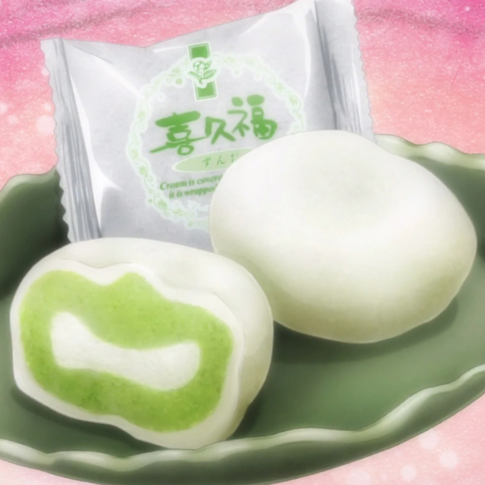

Ramen
Es muy famoso en todo el mundo y tiene muchas variaciones.
Sushi
Perfecto para comer de un solo bocado.
Tempura
La fritura ráída típica japonesa, en especial por los mariscos y verduras.
Takoyaki
Hecha a base de harina de trigo y pulpo. Se hace en forma de una bola.
Yakitori
Es un tipo de brocheta de pollo japonesa, también conocida como kushiyaki.
Onigiri
Una bola de arroz rellena o mezclada con otros ingredientes. Suele tener forma triangular.
Katsudon
Un cuenco de arroz cubierto con una chuleta de cerdo rebozada, huevo revuelto y condimentos.
Mitarashi dango
Albóndigas de arroz ensartadas en palillos en grupos de tres y cubiertas con un glaseado de salsa de soja dulce.
Hanami dango
Un dumpling tradicional japones elaborado con mochiko (harina de arroz), y derivado del mochi (pastel de arroz glutinoso).

Mochi
Pastel japonés hecho de mochigome (grano de arroz glutinoso) machacado hasta convertirlo en una pasta moldeable.
Comida
y postres:3